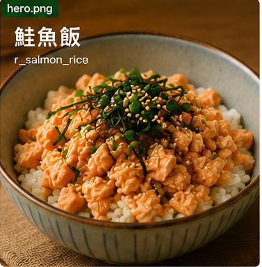
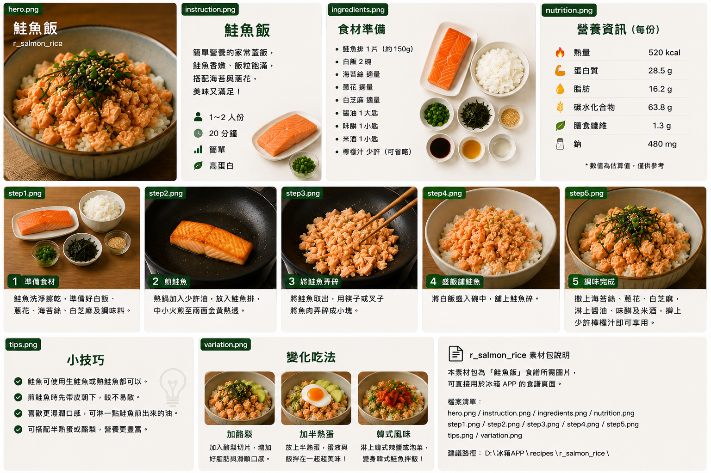

鮭魚飯
高蛋白日式簡餐。
食譜指南
點擊可放大檢視 🔍
料理步驟
共 6 步01
備料
鮭魚排洗淨擦乾，兩面撒少許鹽；蔥切細花；白飯盛入碗中備用。
02
加熱白飯
電鍋或微波將白飯加熱至溫熱（約 700W 微波 90 秒）。
03
煎魚皮面
平底鍋或不沾鍋以中小火熱油，鮭魚皮面朝下放入，不要立刻翻動。
04
煎魚肉面
皮面煎 3～4 分鐘至金黃後翻面，再煎 2～3 分鐘至中心仍略帶粉橘。
05
靜置調味
關火後在魚上淋少許醬油（可選），靜置 1 分鐘讓餘溫熟透。
06
組裝完成
將鮭魚放在白飯上，撒蔥花，可配小黃瓜或海苔。